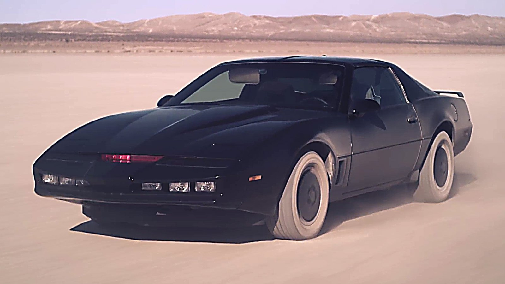
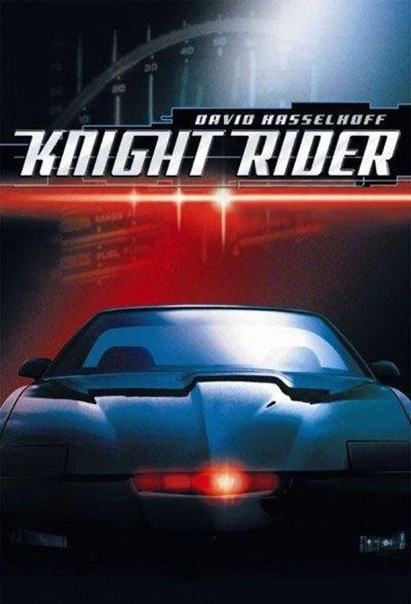
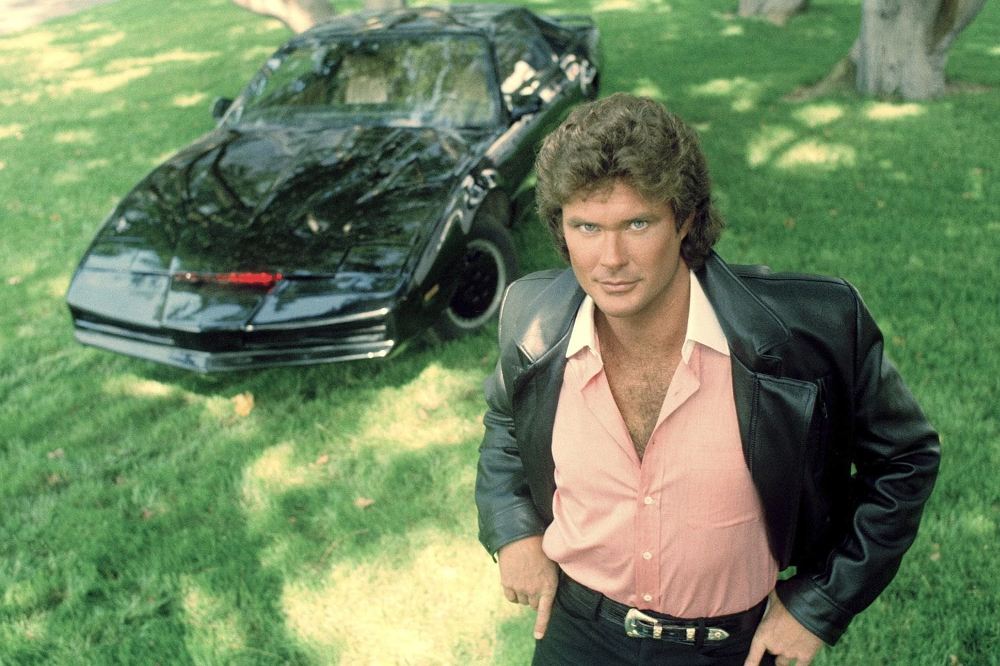

Sommaire8 sections
J'ai découvert K2000 enfant, avec mon ami d'école. Nous ne rations jamais un épisode, et nous passions nos récrés à rejouer les aventures de Michael et KITT.
Quelques années plus tard, quand j'étais au collège, la série est repassée sur France 5, le soir vers 20 h, et je l'ai suivie de nouveau avec passion. Le générique mythique, le bruit et l'éclairage rouge de la voiture : tout y était.
Ce soir, on reprend le volant.

KITT, la Pontiac Firebird Trans Am de la série
K2000 (Knight Rider en version originale) est une série d'action américaine créée par Glen A. Larson. Elle est diffusée sur NBC du 26 septembre 1982 au 4 avril 1986, et compte 4 saisons et 90 épisodes de 48 minutes. Elle est produite par Glen A. Larson Productions et Universal Television.
David Hasselhoff joue Michael Knight, un détective du LAPD infiltré. Gravement blessé, il reçoit un nouveau visage et une nouvelle identité. Edward Mulhare est Devon Miles, qui dirige la FLAG, la Foundation for Law and Government, fondée par le milliardaire Wilton Knight (Richard Basehart). Patricia McPherson joue Bonnie Barstow, la technicienne en chef de KITT, présente dans les saisons 1, 3 et 4. William Daniels prête sa voix à KITT, sans être crédité.
Le point de départ : Michael roule avec KITT (Knight Industries Two Thousand), une Pontiac Firebird Trans Am modifiée, dotée d'une carrosserie très résistante et d'une intelligence artificielle. La FLAG les envoie quand « l'action directe » est la seule solution possible.
Le thème est composé par Stu Phillips et Glen A. Larson. Don Peake signe la musique de 75 des 90 épisodes.
La série a connu des suites : le téléfilm Knight Rider 2000 (1991), la série Team Knight Rider, puis un film et une série en 2008.
K2000 est un projet de Glen A. Larson, qui produit la série avec Universal Television. Larson voulait que KITT ait un « battement de cœur » : le designer Michael Scheffe imagine alors un faisceau lumineux à l'avant de la voiture, inspiré des Cylons de Battlestar Galactica. C'est ce balayage rouge qui deviendra la signature de KITT.
KITT est une Pontiac Firebird Trans Am de 1982 modifiée, qui a coûté environ 100 000 dollars à construire. Scheffe en a dessiné le nez et le tableau de bord. Pontiac fournit les voitures de tournage pour 1 dollar pièce, souvent abîmées, et Universal ne paie que la voiture principale. Quand KITT semble rouler seul, le cascadeur Jack Gill est assis derrière le siège conducteur, caché par un miroir sans tain.
William Daniels enregistre la voix de KITT après le tournage de la plupart des scènes. Pendant les prises, un assistant hors champ donne les répliques à David Hasselhoff, parfois par l'autoradio de la voiture. Daniels a demandé à ne pas être crédité.
Pour la musique, Glen A. Larson et Stu Phillips composent le thème. Larson a dit s'être inspiré de la « Marche et cortège de Bacchus » du ballet Sylvia, de Léo Delibes. Don Peake prend ensuite la suite et signe 75 des 90 épisodes.
Le casting bouge dès la première saison : Patricia McPherson (Bonnie) est écartée après la saison 1, puis revient après la réaction des fans et l'insistance de Hasselhoff et Mulhare. La série est diffusée de 1982 à 1986 sur NBC, puis entre en syndication à l'automne 1986.
La critique est d'abord sévère : la saison 1 recueille 33 % sur Rotten Tomatoes, et Tom Shales du Washington Post écrit que la série est « lancée à pleine vitesse mais sans destination ». Avec le temps, les avis changent : Marc Bernardin d'Entertainment Weekly parle d'« une relique d'une époque plus simple ».

L'affiche de Knight Rider (K2000)
Michael Long, détective infiltré du LAPD, est gravement blessé. Il est sauvé par Wilton Knight, un milliardaire qui lui donne un nouveau visage et une nouvelle identité : Michael Knight.
Wilton Knight a fondé la FLAG, la Foundation for Law and Government. Après sa mort, c'est Devon Miles qui la dirige, et qui envoie Michael en mission quand « l'action directe » est la seule solution possible.
Michael n'est pas seul : il a KITT, une Pontiac Firebird Trans Am dotée d'une intelligence artificielle et d'une carrosserie très résistante. Bonnie Barstow, la technicienne en chef de KITT, veille sur la voiture.
Je m'arrête là : la suite se découvre à l'écran.
K2000 repose sur un duo : un homme et une voiture dotée d'une intelligence artificielle. KITT est décrite comme « avancée, dotée d'une intelligence artificielle, consciente d'elle-même et quasi indestructible », et la série en fait un personnage à part entière, avec sa voix, signée William Daniels.
Le choix de la voiture compte aussi : la Pontiac Firebird Trans Am a été retenue en partie parce que le public la connaissait déjà grâce à Cours après moi shérif (Smokey and the Bandit). Son faisceau rouge, né de l'idée d'un « battement de cœur », devient la signature de KITT.
Le thème, signé Stu Phillips et Glen A. Larson, a traversé les décennies : il a été samplé par Timbaland & Magoo, Busta Rhymes, Panjabi MC et Doja Cat, et il sert de sonnerie dans le film Ted (2012).
À l'époque, la critique n'est pas tendre : 33 % sur Rotten Tomatoes pour la saison 1. La série s'est pourtant forgé un public culte, et des suites ont suivi : Knight Rider 2000, Team Knight Rider, puis un film et une série en 2008.
Mon avis : le générique mythique, le bruit et l'éclairage rouge de la voiture, tout y est. C'est ce qu'on retient en premier.

David Hasselhoff, alias Michael Knight, devant KITT
À sa sortie, la critique ne l'a pas épargnée. Pourtant, K2000 est restée.
Elle a d'abord vécu longtemps à la télévision. Après NBC, elle entre en syndication à l'automne 1986, puis revient sur plusieurs chaînes câblées américaines : USA Network (1994), Sci-Fi Channel (2003), Sleuth (2005) et G4 (2012).
Elle s'est ensuite installée dans la culture populaire. La série compte un public culte, et KITT a inspiré une bande dessinée française (K2000, d'Angelo di Marco, chez Dargaud, en 1988), un Fun Pack Lego Dimensions (2017) et un flipper de Zen Studios. Le thème, lui, a été samplé par Timbaland & Magoo, Busta Rhymes, Panjabi MC et Doja Cat.
Elle a surtout engendré une suite d'héritiers : le spin-off Code of Vengeance (1985), les téléfilms Knight Rider 2000 et Knight Rider 2010, la série Team Knight Rider, puis un film et une série en 2008.
Elle continue enfin d'exister en vidéo : coffrets DVD chez Universal et Mill Creek, un coffret Blu-ray japonais, et une édition allemande 40e anniversaire en 2022.
Mais un classique, c'est aussi une affaire de mémoire. Pour moi, c'est une récré, un copain d'école, et KITT.
Parce que c'est une série d'action sans détour : un homme, une voiture, une mission. Chaque épisode dure 48 minutes, et l'on sait où l'on va dès les premières scènes.
Parce que KITT reste un personnage unique. Une Pontiac Firebird Trans Am de 1982 dotée d'une intelligence artificielle, une voix, un faisceau rouge qui bat comme un cœur : voir la série aujourd'hui, c'est comprendre pourquoi cette voiture est devenue une légende.
Parce que le générique vaut à lui seul le détour. Le thème de Stu Phillips et Glen A. Larson a été samplé par Timbaland & Magoo, Busta Rhymes, Panjabi MC et Doja Cat : on le réécoute avec les oreilles de l'époque, puis avec celles d'aujourd'hui.
Parce que c'est un morceau de l'histoire de la télévision d'action des années 1980. La série a duré quatre saisons et 90 épisodes, et a donné naissance à des suites, des spin-offs, une bande dessinée et un film.
Et parce que certains programmes se retrouvent comme on retrouve une cassette : on appuie sur lecture, et on est de nouveau dans la cour de récré, à rejouer Michael et KITT.
À ses débuts, K2000 n'a pas été épargnée par la critique. Mais elle a trouvé son public, et elle l'a gardé.
Pour moi, c'est d'abord une histoire de récré : un ami d'école, des épisodes qu'on ne ratait jamais, et Michael et KITT rejoués dans la cour. Puis, au collège, la série repassait sur France 5, le soir vers 20 h, et je la suivais de nouveau avec passion.
Aujourd'hui, ce qui me reste, c'est le générique.
La cassette est dans le lecteur. On rembobine.
Titre original
Knight Rider
Pays
États-Unis
Genre
Série d'action
Diffusion
NBC, 1982–1986 (4 saisons, 90 épisodes)
Créateur
Glen A. Larson
La voiture
KITT, Pontiac Firebird Trans Am (1982)
Musique
Stu Phillips · Glen A. Larson (thème)
Fil conducteur
Séries TV cultes — EP. 10
SOMEDAY — SÉRIES EP. 10